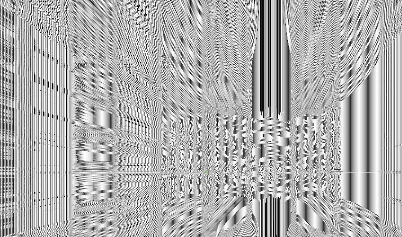
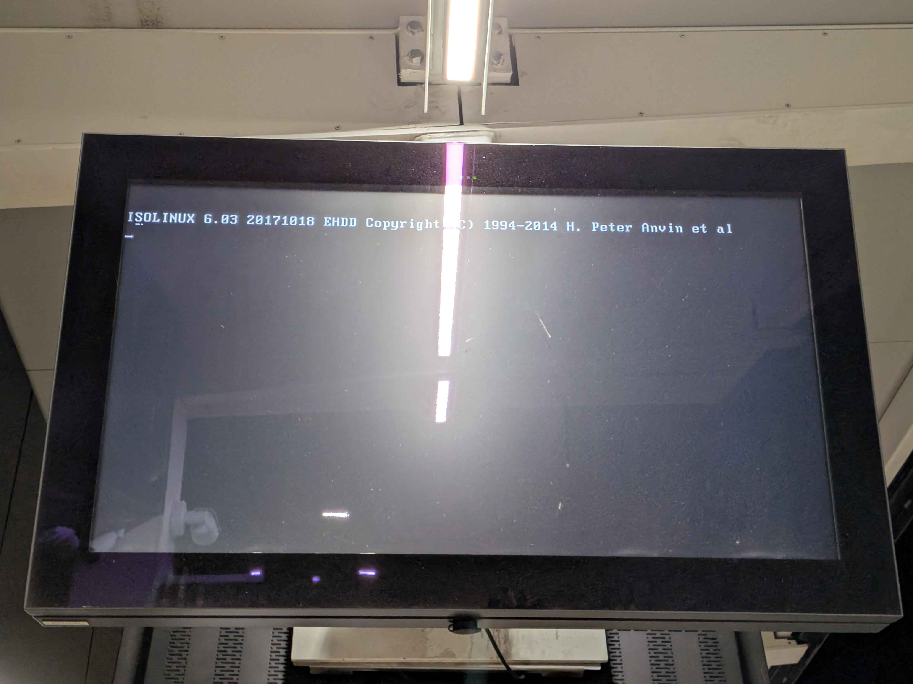
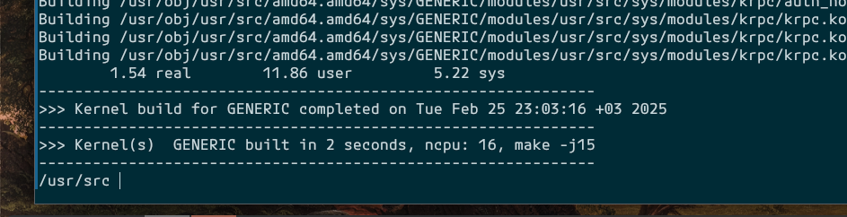
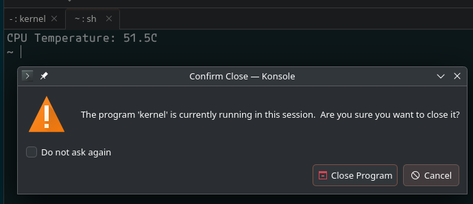

Pictures
Licensed under CC BY-SA 4.0 with all images made by me unless specified otherwise.
floating point imprecision in mandelbulber v2

YUV2 capture card feedback loop

Linux on a train station (picture by exulan from atl)

a fast FreeBSD kernel compilation using WITH_META_MODE=yes

shell issues. this happens even on xterm, but there it locks up the entire terminal

no words